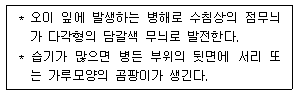

식물보호기사 (2017-09-23 기출문제)
1과목: 식물병리학
1. 벼 줄무늬 잎마름병을 전반시키는 매개충은?
- 진딧물
- 애멸구
- 번개매미충
- 끝동매미충
(정답률: 85%)

2. 병원균이 불완전세대로 Pyricularia grisea(P. oryzae)인 식물병은?
- 벼 도열병
- 벼 흰잎마름병
- 맥류 줄기녹병
- 맥류 흰가루병
(정답률: 74%)
3. 채소류에 발생하는 잿빛곰팡이병에 대한 설명으로 옳지 않은 것은?
- 딸기, 토마토, 고추 등에 분포한다.
- 병환부에 형성된 분생포자가 바람에 의해 전파된다.
- 시설재배의 경우 온도가 높고 습도가 낮을 때 주로 발생한다.
- 노지재배의 경우 흐리고 비가 오는 날이 계속 될 때 주로 발생한다.
(정답률: 85%)
4. 병원균의 분생포자각과 자낭각이 보이는 식물병은?
- 오이 잘록병
- 옥수수 오갈병
- 벼 이삭누른병
- 밤나무 줄기마름병
(정답률: 65%)
5. 중간 기주인 향나무류를 제거하면 피해를 경감시킬 수 있는 식물병은?
- 배추 균핵병
- 사과나무 탄저병
- 복숭아 검은무늬병
- 사과나무 붉은별무늬병
(정답률: 88%)
6. 식물병원 세균 중 육즙한천배양기 상에서 황색 균총을 형성하는 것은?
- Pseudomonas
- Xanthomonas
- Agrobacterium
- Pectobacterium
(정답률: 68%)
7. 대추나무 빗자루병 방제를 위해 나무주사에 사용되는 항생제는?
- 아그랩토
- 브라마이신
- 스트랩토마이신
- 옥시테트라사이클린
(정답률: 87%)
8. 제한효소를 사용하여 DNA 특정 염기부위를 잘라 DNA절편 다양성을 통해 병원체를 동정하는 진단과 관련 있는 용어는?
- IEM
- PCR
- TEM
- RFLP
(정답률: 66%)
9. 벼 도열병에 대한 설명으로 옳은 것은?
- 종자소독은 효과가 없다.
- 분생포자는 서양배 모양이다.
- 레이스가 1개 유형만이 존재한다.
- 질소비료를 충분히 주어 방제한다.
(정답률: 65%)
10. 벼 키다리병균이 분비하여 벼가 비정상적으로 신장하는데 관계하는 생장조절제는?
- 옥신
- 에틸렌
- 지베렐린
- 카이네틴
(정답률: 88%)
11. 박테리오파지에 대한 설명으로 옳은 것은?
- 식물에 기생하는 세균이다.
- 식물에 기생하는 곰팡이이다.
- 세균에 기생하는 바이러스이다.
- 곰팡이에 기생하는 바이러스이다.
(정답률: 79%)
12. 다음 설명에 해당하는 병은?

- 오이 노균병
- 오이 흰가루병
- 오이 덩굴마름병
- 오이 잿빛곰팡이병
(정답률: 72%)
13. 파이토알렉신의 생성 기작에 대한 설명으로 옳은 것은?
- 기주가 단독으로 생성한다.
- 병원균이 단독으로 생성한다.
- 기주와 병원균의 상호 작용에 의하여 기주가 생성한다.
- 기주와 병원균의 상호 작용에 의하여 병원균이 생성한다.
(정답률: 67%)
14. 식물병 발생에 필요한 3대 요인에 속하지 않는 것은?
- 기주
- 매개충
- 병원체
- 환경요인
(정답률: 81%)
15. 사과 탄저병균 전반에 가장 효과적인 전파 수단은?
- 종자
- 선충
- 비바람
- 토양 해충
(정답률: 85%)
16. 감자 역병에 대한 설명으로 옳지 않은 것은?
- 병원균은 자웅동형성이다.
- 아일랜드 대기근의 원인이다.
- 역사적으로 1845년 경에 대발생했다.
- 무병 씨감자를 사용하여 방제할 수 있다.
(정답률: 82%)
17. 글루티노사 담배(N. glutinosa)에 TMV(담배 모자이크바이러스)를 접종했을 때 주로 나타나는 현상?
- 잠복감염
- 국부병징
- 전신감염
- 병징은폐
(정답률: 81%)
18. 뽕나무 오갈병의 병원체는?
- 세균
- 진균
- 바이러스
- 파이토플라즈마
(정답률: 85%)
19. 저항성 품종을 이용한 방제방법으로 가장 큰 문제점에 해당하는 것은?
- 비경제성
- 비효과성
- 약해 및 잔류독성
- 저항성 품종의 이병화 현상
(정답률: 90%)
20. 종묘 소독에 대한 설명으로 옳은 것은?
- 농약만을 사용하는 방법이다.
- 종자의 발아율을 좋게 하는 방법이다.
- 종자의 이물질이 없도록 정선하는 방법이다.
- 종자와 종묘 외에도 덩이뿌리 등 영양 번식체를 소독하는 방법이다.
(정답률: 80%)
2과목: 농림해충학
21. 담배나방 유충에 대한 설명으로 옳지 않은 것은?
- 어린 유충은 주로 잎을 가해한다.
- 땅속에서 월동하고 나서 번데기가 된다.
- 제3령 이후에는 낮에는 잎 뒷면에 숨는다.
- 부화 유충은 밤낮을 가리지 않고 가해한다.
(정답률: 62%)
22. 천적을 이용한 생물적 방제에 대한 설명으로 옳지 않은 것은?
- 외래종 도입할 경우 방제 성공률이 낮다.
- 고립된 환경조건에서는 방제 성공률이 높다.
- 이동성이 큰 해충의 경우 방제 성공률이 낮다.
- 경제적 피해수준이 큰 해충은 방제 성공률이 높다.
(정답률: 60%)
23. 곤충의 탈피와 변태를 조절하는 호르몬 분비에 관여하는 기관이 아닌 것은?
- 뇌
- 전흉선
- 말피기관
- 알라타체
(정답률: 77%)
24. 사과응애에 관한 설명으로 옳지 않은 것은?
- 알로 월동한다.
- 1쌍의 완전한 눈과 불완전한 눈이 있다.
- 몸의 센털은 다른 응애류보다 비교적 길다.
- 수컷은 황녹색이며 등쪽에 엷은 흑색의 반점이 있다.
(정답률: 50%)
25. 마늘에 피해를 주는 고자리파리의 방제 방법으로 가장 효과가 적은 것은?
- 천적인 고자리혹벌을 이용한다.
- 미숙 유기질 비료를 많이 사용한다.
- 파종 또는 이식 전에 토양살충제를 살포한다.
- 연작지에서 발생과 피해라 심하므로 윤작을 실시한다.
(정답률: 78%)
26. 지표와 가까운 밭작물의 줄기와 잎에 가장 큰 피해를 주는 해충은?
- 조명나방
- 멸강나방
- 담배나방
- 거세미나방
(정답률: 63%)
27. 곤충의 호흡 기능과 관련된 조직이 아닌 것은?
- 기관
- 기문
- 수상돌기
- 기관소지
(정답률: 82%)
28. 분류학적으로 개미가 속하는 곤충목은?
- 벌목
- 이목
- 노린재목
- 총채벌레목.
(정답률: 79%)
29. 주로 온실에서 재배하는 토마토에 바이러스병을 매개하는 해충으로 가장 피해를 많이 주는 것은?
- 갈색여치
- 외줄면충
- 목화진딧물
- 담배가루이
(정답률: 67%)
30. 작물의 재배시기를 조절하여 해충의 피해를 줄이는 방법은?
- 화학적 방제법
- 경종적 방제법
- 기계적 방제법
- 물리적 방제법
(정답률: 87%)
31. 중국으로부터 비래하는 것으로 우리나라에서 월동하며 벼에 바이러스병을 매개하는 것은?
- 애멸구
- 꽃매미
- 벼멸구
- 흰등멸구
(정답률: 75%)
32. 가뢰과에 속하는 곤충들에서 주로 나타나는 변태의 형태는?
- 무변태
- 과변태
- 완전변태
- 불완전변태
(정답률: 80%)
33. 곤충의 일반적 특징이 아닌 것은?
- 외골격이다.
- 1쌍의 더듬이가 있다.
- 개방기관계를 가진다.
- 가슴에 2쌍의 다리가 있다.
(정답률: 80%)
34. 휴면에 대한 설명으로 옳은 것은??
- 환경이 좋아지면 즉시 종료된다.
- 내분비기관에서 분비되는 페로몬에 의해 유기된다.
- 환경이 좋아지면 일정한 생리적 과정을 거친 후 종료된다.
- 활동을 정지한 상태로 좋지 않은 환경에 의해 직접 유기된다.
(정답률: 79%)
35. 곤충의 소화기관 중 내배엽에서 만들어진 것은?
- 중장
- 소장
- 전위
- 식도
(정답률: 75%)
36. 부패물 또는 토양 속의 유기물에 자라는 미생물을 먹고 사는 곤충은?
- 진딧물
- 메뚜기
- 톡토기
- 깍지벌레
(정답률: 85%)
37. 유충이 한 개의 벼 잎을 세로로 말고 몇 군데를 철한 다음 그 속에서 가해하는 해충은?
- 혹명나방
- 벼애나방
- 벼밤나방
- 줄점팔랑나비
(정답률: 43%)
38. 농림해충의 상대밀도 조사법으로 가장 적절한 방법은?
- 빈도조사
- 피도조사
- 설문조사
- 포충망조사
(정답률: 73%)
39. 존스턴기관을 확인할 수 있는 곤충류는? (문제 오류로 실제 시험에서는 3,4번이 정답처리 되었습니다. 여기서는 3번을 누르면 정답 처리 됩니다.)
- 바퀴류
- 개미류
- 모기류
- 나방류
(정답률: 87%)
40. 배나무이의 분류학적 위치는?
- 나비목
- 노린재목
- 사마귀목
- 딱정벌레목
(정답률: 79%)
3과목: 재배학원론
41. 다음 중 휴작기간이 가장 긴 작물은?
- 가지
- 토마토
- 담배
- 아마
(정답률: 72%)
42. 다음 중 작물의 주요온도에서 최적온도가 가장 낮은 것은?
- 삼
- 멜론
- 오이
- 담배
(정답률: 56%)
43. 같은 종 내의 다른 개체 간에 통신수단으로 체외로 분비하는 휘발성 화합물로 암수의 만남과 교미 등의 생식활동 또는 사회생활을 하는 집단에서 개체들의 생리현상에 영향을 끼치는 물질은?
- 페로몬
- 테르펜
- 기피제
- 화학불임제
(정답률: 88%)
44. 혼파하여 목야지를 조성할 때 화본과 목초와 콩과 목초의 가장 알맞은 파종 비율은?
- 화본과 목초 8 : 콩과목초 2
- 화본과 목초 2 : 콩과목초 8
- 화본과 목초 6 : 콩과목초 4
- 화본과 목초 4 : 콩과목초 6
(정답률: 65%)
45. 다음 중 벼품종의 만식적응성과 관계가 가장 적은 기상생태적 특성은?
- 묘대일수 감응도
- 감온성
- 감광성
- 내건성
(정답률: 55%)
46. 작물의 결실과 온도의 관계에 대한 설명으로 옳은 것은?
- 생육가능 온도 내에서 주*야간 온도는 항온이 변온보다 좋다.
- 변온조건에서 결실이 좋아지는 작물이 많다.
- 주간은 저온이고 야간은 온도가 높을수록 좋다.
- 주간, 야간 모두 저온인 것이 좋다.
(정답률: 72%)
47. 다음 중 작물의 복토 깊이가 가장 깊은 것은?
- 파
- 당근
- 오이
- 잠두
(정답률: 69%)
48. 습해에 강한 작물의 특성을 설명한 것으로 옳은 것은?
- 경엽으로부터 뿌리로의 산소공급능력이 작다.
- 뿌리조직의 목화정도가 낮다.
- 뿌리의 분포가 얕고, 부정근의 발생이 작다.
- 뿌리가 환원성 유해물질에 대해 저항성이 크다.
(정답률: 63%)
49. 다음 중 괴경으로 번식을 하는 것으로만 나열된 것은?
- 감자, 토란
- 다알리아, 고구마
- 백합, 마늘
- 생강, 박하
(정답률: 66%)
50. 작물 잎의 엽록소 구성성분으로 결핍되면 황백화 현상이 노엽에서부터 생기며, 산성이 강한 토양과 칼리비료를 과다 시용한 토양에서 결핍을 보이는 원소는?
- 붕소
- 마그네슘
- 철
- 칼슘
(정답률: 62%)
51. 다음 중 호광성 종자에 해당하는 것은?
- 가지
- 오이
- 상추
- 토마토
(정답률: 75%)
52. 다음 중 중성식물로만 나열된 것은?
- 아마, 상추
- 콩, 담배
- 고추, 토마토
- 시금치, 양파
(정답률: 64%)
53. 무배유종자인 것으로만 나열된 것은?
- 벼, 밀
- 옥수수, 피마자
- 콩, 팥
- 밀, 양파
(정답률: 79%)
54. 다음 중 장명종자에 해당하는 것은?
- 베고니아
- 나팔꽃
- 팬지
- 일일초
(정답률: 66%)
55. 작물의 생육과 온도에 대한 설명으로 옳은 것은?
- 벼의 적산온도는 메밀보다 높다.
- 봄보리의 적산온도는 담배보다 높다.
- 광합성의 온도계수는 4 내외이다.
- 호흡작용의 Q10에서 30℃까지는 4 정도이다.
(정답률: 74%)
56. 한 가지 작물이 생육하고 있는 줄사이에 다른 작물을 재배하는 것을 무엇이라 하는가?
- 간작
- 교호작
- 자유작
- 주위작
(정답률: 68%)
57. 다음 중 굴광현상에 가장 유효한 광은?
- 자색광
- 자외선
- 녹색광
- 청색광
(정답률: 73%)
58. 영양번식법 중 휘묻이에 해당하지 않는 것은?
- 선취법
- 파상취목법
- 당목취법
- 고취법
(정답률: 64%)
59. 식물체 내의 수분퍼센셜에 대한 설명으로 틀린 것은?
- 압력퍼텐셜과 삼투퍼텐셀이 같으면 팽만상태가 된다.
- 수분퍼텐셜과 삼투퍼텐셜이 같으면 원형질 분리가 된다.
- 물은 수분퍼텐셜이 높은 곳에서 낮은 곳으로 이동한다.
- 식물의 수분퍼텐셜에는 메트릭퍼텐셜이 가장 크게 영향을 미친다.
(정답률: 67%)
60. 국화의 주년재배와 가장 관계가 있는 것은?
- 온도처리
- 광처리
- 수분처리
- 영양처리
(정답률: 75%)
4과목: 농약학
61. 제제를 물로 희석하여 사용하는 액체시용제에 해당하지 않는 제형?
- 유제
- 액제
- 수화제
- 입제
(정답률: 70%)
62. 보르도액 살포 후 과수잎 중의 pH가 얼마일 때 구리의 용해도가최고치가 되는가?
- 12.4
- 11.3
- 10.4
- 7.0
(정답률: 55%)
63. 농약의 보조제로 사용되지 않는 것은?
- 전착제
- 용제
- 주제
- 협력제
(정답률: 83%)
64. 파라티온은 인체의 조직과 혈액 중의 콜린에스테라제와 결합해서 어느 것이 축적되어 중독 증상을 일으키는가?
- 콜린
- 초산
- 인산
- 아세틸콜린
(정답률: 78%)
65. 유제를 1500배로 희석하여 액량 15L로 살포하려 한다. 이때 원액약량은 몇 mL 가 필요한가?
- 1
- 10
- 100
- 1000
(정답률: 66%)
66. 다음 중 훈증제가 아닌 농약은?
- 메틸브로마이드제
- 크로로피크린제
- 디코폴유제
- 인화알루미늄제
(정답률: 62%)
67. 기생주체 내로 병원균 포자가 침입하지 못하게 하는 약제 중 가장 효과적인 것은?
- 접촉독제.
- 직접살균제.
- 침투성살균제.
- 보호살균제.
(정답률: 73%)
68. 농약의 잔류에 대한 설명 중 옳지 않은 것은?
- 작물잔류성농약이란 농약의 성분이 수확물 중에 잔류하여 농약잔류허용기준에 해당할 우려가 있는 농약을 말한다.
- 안전계수란 사람이 하루에 섭취할 수 있는 약의 량을 말한다.
- 작물 체내의 잔류 농약은 경시적으로 계속하여 감소한다.
- 농약의 작물잔류는 사용횟수와 제제형태에 따라서 다르다.
(정답률: 74%)
69. 살충제와 같은 유기화합물에 함유된 할로겐 원소에 선택적으로 감응하는 가스크로마토그래피(GC) 검출기는?
- 불꽃이온화검출기(FID)
- 열전도도검출기(TCD)
- 전자포획검출기(ECD)
- 열이온검출기(TID)
(정답률: 67%)
70. 농약 약해의 원인이 될 수 있는 것은?
- 제4종 복합비료와 혼용 살포
- 표준희석배수의 농약정량 살포
- 병해충 종류별로 전문약제를 선택 살포
- 작용특성이 서로 다른 농약으로 바꾸어 가면서 살포
(정답률: 75%)
71. 유제에 사용되는 유기용제를 줄이기 위한 방안으로 개발된 제형은?
- 액제
- 유탁제
- 액상수화제
- 수면전개제
(정답률: 55%)
72. 다음 중 요소계 제초제는?
- linuron
- 2,4-D
- dicanba
- asulam
(정답률: 67%)
73. 농약의 제제용으로 사용되는 증량제가 아닌 것은?
- 규조토
- 활석
- 벤토나이트
- 카제인
(정답률: 71%)
74. 다음 중 소나무에서 발생하는 솔나방을 방제하는데 주로 사용할 수 있는 약제는?
- 트리포린 유제
- 페니트로티온 유제
- 크로로탈로닐 수화제
- 글루포시네이트 암모늄액제
(정답률: 49%)
75. 물에 녹지 않는 주제를 카올린, 벤토나이트 등의 점토광물과 계면활성제, 분산제를 배합하고 혼합하여 제제화한 것은?
- 수용제
- 분제
- 증량제
- 수화제
(정답률: 72%)
76. DDVP 유제 50%를 500배로 희석하여 면적 10a당 4말(1말18L)을 살포하고자 할 때의 소요약량은 약 몇 mL 인가?
- 72
- 144
- 288
- 576
(정답률: 68%)
77. 교차저항성에 대한 설명으로 가장 옳은 것은?
- 어떤 약제에 의해 저항성이 생긴 곤충이 다른 약제에 저항성을 보이는 것
- 동일 곤충에 어떤 약제를 반복살포함으로써 생기는 저항성
- 동일 곤충에 두가지 약제를 교대로 처리함으로써 생긴 저항성
- 어떤 약제에 대한 저항성을 가진 곤충이 다음 세대에 그 특성을 유전시키는 것
(정답률: 83%)
78. 경구 중독에 대한 설명으로 틀린 것은?
- 입을 통해서 소화기내로 들어와 흡수 중독을 일으키는 것을 말한다.
- 인공호흡을 시키고 산소를 흡입시킨 다음 안정시킨 후 모포 등으로 싸서 보온시킨다.
- 따듯한 물이나 소금물로 위를 세척한다.
- 약물이 장내로 들어갈 염려가 있을 때는 황산마그네슘 용액에 규조토 등을 타서 먹여 배설시킨다.
(정답률: 68%)
79. 농약 원제에 대한 설명으로 옳은 것은?
- 유효성분이 농축되어 있는 물질이다.
- 제품보다 부성분을 많이 함유하고 있다.
- 물질의 순도는 대부분 50~60% 정도이다.
- 원액에 유기 용매를 희석해 놓은 것이다.
(정답률: 78%)
80. 석회유황합제 제조시 생석회와 황의 중량비로서 가장 적합한 것은?
- 1:1
- 2:2
- 1:2
- 1:3
(정답률: 73%)
5과목: 잡초방제학
81. 잡초방제 한계기간이 가장 짧은 작물은?
- 벼
- 콩
- 녹두
- 보리
(정답률: 54%)
82. 잡초 방제법을 물리적, 화학적, 예방적 방제법으로 구분할 때, 예방적 방제법이 아닌 것은?
- 농기구 청소
- 비닐멀칭 피복
- 작물종자 정선
- 관개수로 관리
(정답률: 74%)
83. 잡초의 생장형에 따른 분류로 옳은 것은?
- 총생형 – 메꽃, 환삼덩굴
- 만경형 – 민들레, 질경이
- 로제트형 –억새, 뚝새풀
- 직립형 – 명아주, 가막사리
(정답률: 63%)
84. 잡초군락의 천이에서 가장 크게 영향을 받는 것은?
- 물관리
- 우점잡초
- 경운 깊이
- 제초제 사용
(정답률: 77%)
85. 종합적 방제법에 대한 설명으로 옳지 않은 것은?
- 제초제 약해와 환경오염을 줄일 수 있다.
- 여러 가지 다른 방제법을 상호 협력적으로 적용하는 방법이다.
- 화학적 방제를 배제하고 생태적 방제와 예방적 방제를 주로 사용한다.
- 잡초 군락의 크기가 감소되고 작물의 생산력이 증대되는 효과가 있다.
(정답률: 80%)
86. 제초제의 주요 작용반응기로 가장 거리가 먼 것은?
- 황산기
- 아미노기
- 카르복시기
- 히드록시기
(정답률: 55%)
87. 잡초 종자의 발아 환경 중 피토크롬 체계에 영향을 미치는 주요인은?
- 광
- 산소
- 온도
- 수분
(정답률: 80%)
88. 발생 위치별 주요 잡초로 옳은 것은?
- 논-별꽃, 개망초
- 밭-바랭이, 쇠비름
- 과수원-가래, 쇠털꽃
- 조림지- 물달개비, 올방개
(정답률: 78%)
89. 식물의 광합성 회로 특성에 대한설명이 옳은 것은?
- 대부분의 작물은 C4 식물이다.
- 모든 잡초는 C4 광합성 회로를 갖는다.
- 광합성 회로가 C4인 식물은 C3인 식물보다 광합성에서 불리하다.
- 돌피와 향부자와 같은 잡초는 C4 식물이어서 생장이 빨라 경합에서 유리하다.
(정답률: 72%)
90. 이행형 제초제가 아닌 것은?
- 2,4-D
- Diquat
- Simazine
- Glyphosate
(정답률: 54%)
91. 초관 형성을 비효과적으로 하는 양파의 경우에 잡초경합 한계기간은?
- 파종 ~ 출아초기
- 출시기 ~ 성숙기
- 생육초기 ~ 초관형성기
- 생식 생장기 이후 ~ 출수기
(정답률: 73%)
92. 잡초 방제의 주요 목적이 아닌 것은?
- 작물수량증가
- 작물품질향상
- 토양 물리성 개선
- 병해충 서식처 제거
(정답률: 79%)
93. 발아 적온이 상대적으로 가장 높은 잡초 종자는?
- 메귀리
- 뚝새풀
- 향부자
- 올챙이고랭이
(정답률: 38%)
94. 생태적 잡초방제를 위한 재배관리의 합리화 방법으로 가장 거리가 먼 것은?
- 잡초에 불리한 윤작체계로 재배한다.
- 작물을 충실하게 키워 경합력을 높인다.
- 청결한 작물종자를 선택하거나 다시 정선하여 파종한다.
- 적기 적량의 시비기술로 작물의 초관형성을 촉진시킨다.
(정답률: 60%)
95. 생물적 잡초 방제법에 대한 설명으로 옳은 것은?
- 살초작용이 빠르다.
- 환경에 잔류문제가 없다.
- 동시에 여러 초종의 방제가 쉽다.
- 방제 작업에 필요한 비용이 많이 든다.
(정답률: 79%)
96. 생활사에 따른 잡초의 분류가 모두 맞는 것은?
- 쑥, 메꽃, 벗풀, 올방개
- 피, 마디꽃, 나도겨풀, 물달개비
- 망초, 냉이, 달맞이꽃, 강아지풀
- 가래, 뚝새풀, 바랭이 알방동사니
(정답률: 41%)
97. 주로 영양번식기관으로 번식하는 잡초는?
- 쇠뜨기
- 왕바랭이
- 고들빼기
- 바람하늘지기
(정답률: 51%)
98. 단자엽식물과 쌍자엽식물 간의 차이처럼 잡초의 생장형이 달라서 나타나는 제초의 선택성은?
- 생태적 선택성
- 형태적 선택성
- 생리적 선택성
- 생화학적 선택성
(정답률: 70%)
99. 벼와 피의 형태적 차이점은?
- 벼에는 잎귀가 있으니 잎혀가 없다.
- 피에는 잎귀가 있으나 잎혀가 없다.
- 피에는 잎귀와 잎혀가 있으나 벼에는 없다.
- 벼에는 잎귀와 잎혀가 있으나 피에는 없다.
(정답률: 78%)
100. 제초제의 약해 유발 원인으로 옳지 않은 것은?
- 전착제 농도를 권장량보다 낮게 처리하는 경우
- 비늘하우스 내에서나 피복재배지에서의 부주의한 처리
- 고압분무기로 살포시 주변 작물로 제초제가 비산되는 경우
- 제초제의 정확한 특성을 무시하고 적용범위를 확대하는 경우
(정답률: 80%)